예수님의 사랑을 전하는 리틀산타
크리스마스는 아기 예수님의 탄생을 기뻐하며, 먼저 받은 사랑을 이웃과 나누는 날입니다.
“우리가 사랑함은 그가 먼저 우리를 사랑하셨음이라”요한일서 4:19
우리가 누군가에게 선물을 건넬 수 있는 것은 하나님께서 먼저 우리에게 가장 큰 선물을 주셨기 때문입니다. 그리고 그 사랑 안에서 우리는 누구나 하나님으로부터 ‘재능’이라는 선물도 받았습니다.
“선물은 크게 두 가지가 있단다.
하나는 사람이 준 선물이고, 또 하나는 하늘이 준 ‘재능’이라는 선물이지.”그림책 〈리틀산타〉 중에서
리틀산타 재능마켓은 아이들이 그 재능을 꺼내 이웃에게 선물하는 ‘키즈셀러’가 되고, 어른들은 그 선물을 기쁘게 받는 손님이 되는 크리스마스 마켓입니다. 먼저 받은 사랑을 다시 나눌 때, 크리스마스는 ‘선물을 받는 날’에서 ‘선물을 주는 날’이 됩니다.
어떤 행사인가요?
2026년 12월 19일(토), 김포 운양동 움직이는 교회에서 김포 지역 어린이 40명이 리틀산타가 되어 이웃에게 자신의 재능을 선물하는 〈리틀산타 재능마켓〉이 열립니다. 예수님의 탄생을 기념하는 성탄의 달에, 먼저 받은 사랑을 아이들이 직접 흘려보내는 나눔의 자리입니다.
| 항목 | 내용 |
|---|---|
| 행사명 | 김포 리틀산타 재능마켓 |
| 일시 | 2026년 12월 19일(토) · 1부 / 2부 (시간은 확정 후 안내) |
| 장소 | 김포 운양동 움직이는 교회 |
| 참여 어린이 | 김포 지역 어린이 40명 (1부 20명 · 2부 20명) |
| 봉사자 | 13명 (역할은 아래 ‘봉사자는 몇 명이 함께하나요?’ 참고) |
| 나눔 | 티켓 수입은 실비를 제외한 전액 기부 |
| 함께 준비하는 곳 | 움직이는 교회 · 패브릭토리 |
리틀산타 재능마켓은 무엇인가요?
아이들이 자신의 재능을 선물하는 ‘키즈셀러(리틀산타)’가 되고, 어른들이 그 선물을 받는 손님이 되는 크리스마스 마켓입니다. 아이들은 물건을 파는 것이 아니라, 하나님이 주신 재능을 꺼내 누군가를 위한 선물로 건네줍니다.
- 리틀산타(아이)는 마사지, 응원, 네일아트, 디저트처럼 자기가 잘하는 것을 찾아 ‘재능 선물’을 준비합니다. 포스터와 선물 메뉴판도 직접 만듭니다.
- 손님(어른)은 아이의 마음과 시도를 있는 그대로 받아주는 사람입니다. 다른 집 아이의 선물을 받으며 자연스럽게 대화가 시작됩니다.
- 티켓 1장으로 리틀산타 5명의 재능 선물을 받습니다. 선물을 받을 때마다 티켓 뒷면의 다섯 칸을 리틀산타의 사인으로 채워 갑니다.
- 리틀산타도 손님이 됩니다. 1부 리틀산타는 2부에, 2부 리틀산타는 1부에 손님으로 와서 다른 친구의 선물을 받습니다. 주는 기쁨과 받는 기쁨을 모두 경험합니다.
한 부에 리틀산타 20명이 4명씩 5개 재능 존에서 선물을 나눕니다. 존은 아이들이 고른 재능에 맞춰 정하며, 아래는 2025년 운영을 바탕으로 한 예시입니다.
| 존(예시) | 리틀산타의 선물 |
|---|---|
| 응원·축복존 | 손님을 위한 응원과 축복의 한마디, 손글씨 카드 |
| 마사지존 | 어깨·손 마사지 |
| 꾸미기존 | 네일아트, 페이스 스티커 |
| 크리스마스존 | 함께 만드는 성탄 장식·카드 |
| 다과존 | 직접 준비한 디저트와 차 |
리틀산타 1명이 선물 30개를 준비하면 한 부에 티켓 약 120장 분량의 선물이 준비됩니다(20명 × 30개 ÷ 티켓당 5명).
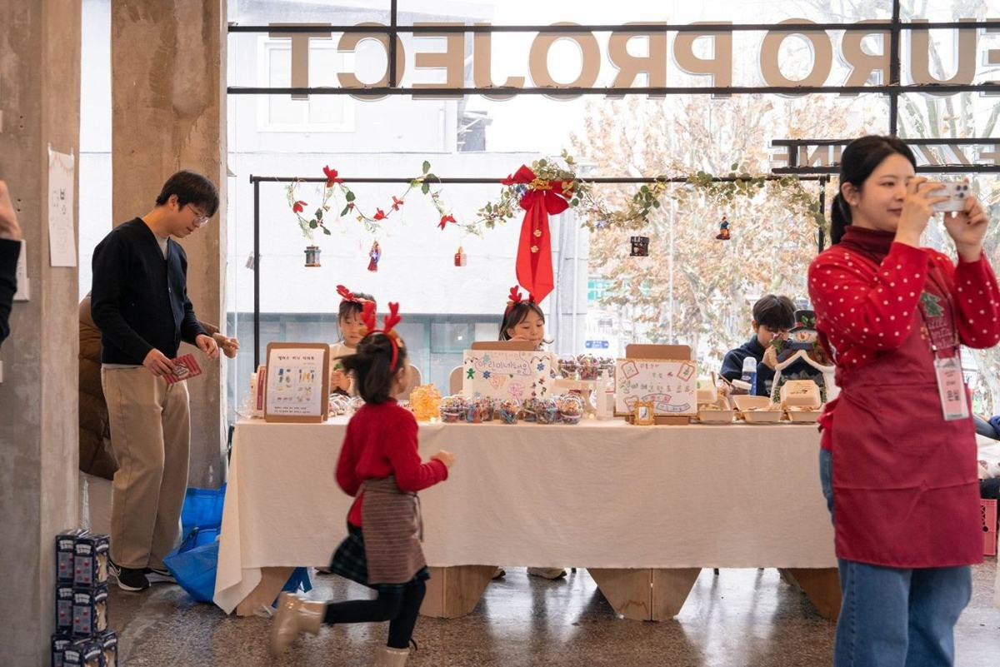
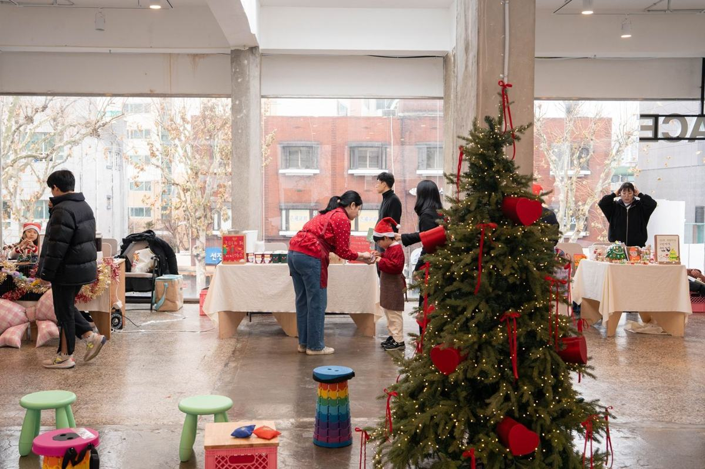
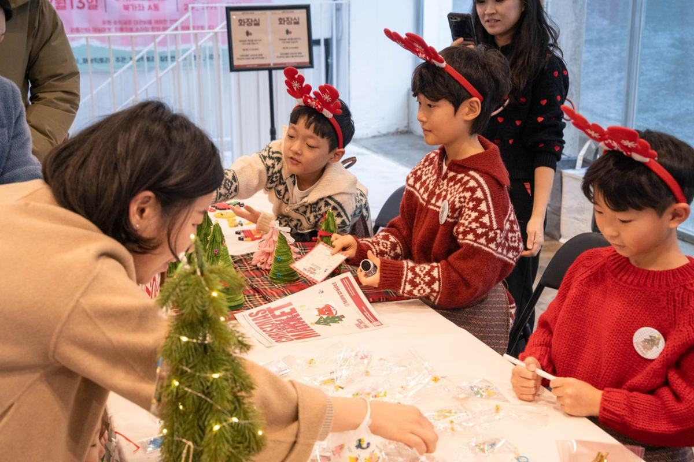
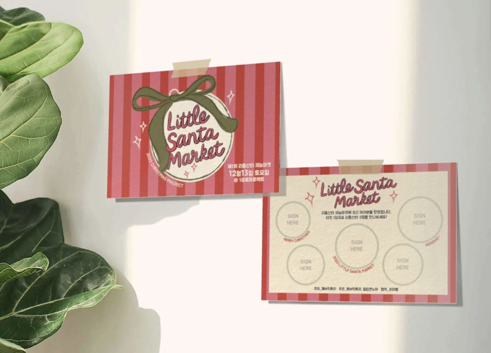
왜 교회에서, 리틀산타재능마켓을 하나요?
성탄절은 하나님께서 우리에게 가장 큰 선물을 주신 날입니다. 리틀산타 재능마켓은 그 선물을 먼저 받은 아이들이, 받은 사랑을 이웃에게 흘려보내는 자리입니다. 아이들에게 12월 25일을 ‘산타에게 선물을 받는 날’이 아니라 ‘예수님의 탄생을 기뻐하며 기쁨을 나누는 날’로 기억하게 하는 것이 이 행사의 목적입니다.
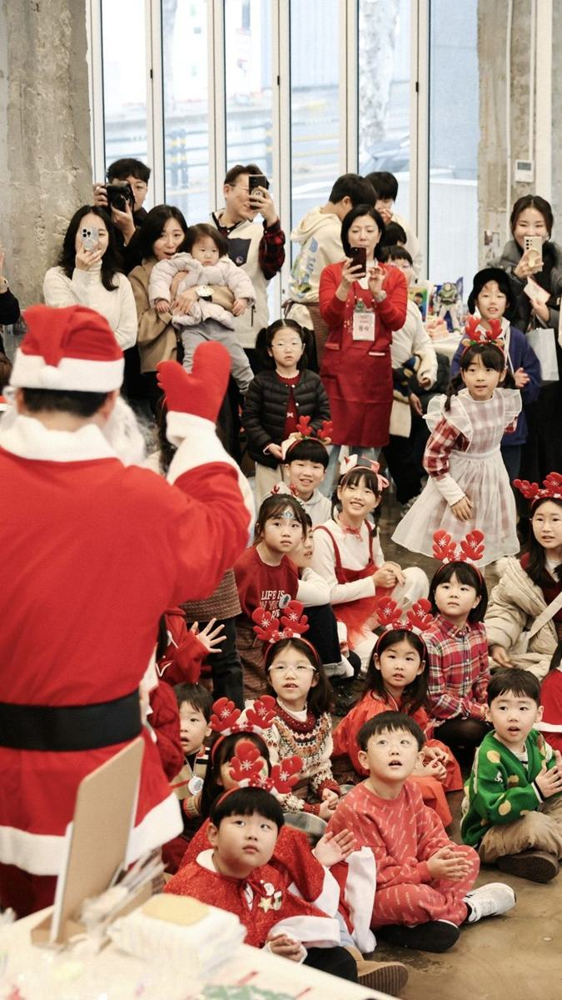
선물의 근원 — 하나님이 먼저 주셨습니다
“하나님이 세상을 이처럼 사랑하사 독생자를 주셨으니 이는 그를 믿는 자마다 멸망하지 않고 영생을 얻게 하려 하심이라”요한복음 3:16
성탄의 선물은 우리가 만든 것이 아니라 우리가 먼저 받은 것입니다. “우리가 사랑함은 그가 먼저 우리를 사랑하셨음이라”(요한일서 4:19)는 말씀처럼, 리틀산타의 나눔은 먼저 받은 사랑에 대한 응답입니다.
재능은 하늘이 주신 선물입니다
“온갖 좋은 은사와 온전한 선물이 다 위로부터 빛들의 아버지께로부터 내려오나니”(야고보서 1:17). 아이들이 가진 작은 재능 하나하나가 하나님께서 주신 은사입니다. 리틀산타는 아이들이 그 재능을 발견하고 감사하는 시간에서 시작합니다.
받은 은사로 서로 섬길 때
“각각 은사를 받은 대로 하나님의 여러 가지 은혜를 맡은 선한 청지기 같이 서로 봉사하라”베드로전서 4:10
재능은 나를 자랑하기 위한 것이 아니라 누군가를 섬기라고 맡기신 것입니다. 마사지 한 번, 응원 한 마디, 정성스러운 다과 한 접시가 모두 작은 섬김이 됩니다.
주는 것이 받는 것보다 복이 있습니다
“주 예수께서 친히 말씀하신 바 주는 것이 받는 것보다 복이 있다 하심을 기억하여야 할지니라”사도행전 20:35
아기 예수님께 보배합을 열어 예물을 드린 동방박사들처럼(마태복음 2:11), 리틀산타들도 자기만의 보배합을 열어 이웃에게 건넵니다. 받기만 하던 아이가 주는 사람이 되는 경험이 아이들의 신앙과 성품에 오래 남습니다.
지극히 작은 자에게 한 것
“내가 진실로 너희에게 이르노니 너희가 여기 내 형제 중에 지극히 작은 자 하나에게 한 것이 곧 내게 한 것이니라”마태복음 25:40
마켓에서 모인 티켓 수입은 실비를 제외한 전액을 도움이 필요한 어린이에게 보냅니다. 아이들의 작은 재능이 또래 친구를 향한 사랑의 선물로 이어집니다.
아이들은 어떻게 준비하나요?
리틀산타는 당일 하루가 아니라 약 3주의 준비 과정 전체가 프로그램입니다. 아이들은 재능을 발견하고, 선물을 준비하고, 건네는 연습을 하며 ‘주는 사람’이 되어 갑니다.
- 재능 발견하기 — “하나님이 나에게 주신 재능은 무엇일까?”를 나누며 나의 재능을 발견하고 감사의 시간을 가집니다. 노래 〈리틀산타의 선물〉을 부르며 주는 기쁨의 의미를 나눕니다.
- 선물 정하기 — 내 재능으로 누구에게 어떤 선물을 줄지 정하고 재능 존을 배정합니다.
- 셀러 준비하기 — 내 재능을 알리는 포스터와 선물 메뉴판을 직접 그리고, 선물을 준비합니다.
- 건네는 연습 — 손님을 맞이하고 선물을 건네는 말과 행동을 연습합니다.
준비 일정은 아래와 같이 예정되어 있으며, 확정되는 대로 다시 안내해 드립니다.
| 시기예정 | 내용 |
|---|---|
| 11월 초 | 스텝 및 봉사자 모집 |
| 11월 중순 | 김포 지역 리틀산타 40명 모집·확정 |
| 11월 말 | 리틀산타 존 배정 |
| 12월 초~중순 | 가정에서 선물·포스터·메뉴판 준비 (산타 멘토가 보호자 문의 안내) |
| 12월 초 | 스텝 및 봉사자 사전 교육(온라인 1회) |
| 12월 18일(금) | 저녁 사전 세팅 |
| 12월 19일(토) | 김포 리틀산타 재능마켓 1부·2부 |
당일은 어떻게 진행되나요?
1부와 2부는 각각 2시간씩, 리틀산타 20명이 선물을 나누는 방식으로 진행합니다. 아래 시간은 예정이며, 확정되면 다시 안내해 드립니다.
| 시간예정 | 진행 |
|---|---|
| 09:00 | 봉사자 집결, 공간 세팅 |
| 10:00 | 봉사자 기도와 역할 브리핑 |
| 10:30 | 1부 리틀산타 도착, 부스 준비 |
| 11:00~13:00 | 1부 — 여는 기도와 성탄 말씀(5분), 재능마켓, 마무리 감사 나눔 |
| 13:00~14:30 | 점심, 1부 정리와 2부 준비 |
| 14:30 | 2부 리틀산타 도착, 부스 준비 |
| 15:00~17:00 | 2부 — 여는 기도와 성탄 말씀(5분), 재능마켓, 마무리 감사 나눔 |
| 17:00~18:00 | 철수, 봉사자 마무리 기도 |
교회 안에는 이런 공간이 마련됩니다.
| 공간 | 용도 |
|---|---|
| 마켓 공간 | 재능 존 5개 (존마다 테이블 1~2개, 리틀산타 4명) |
| 웰컴·티켓 데스크 | 입구에서 티켓 안내와 배부 |
| 포토존 | 성탄 분위기의 기념 촬영 공간 |
| 리틀산타 대기실 | 아이들의 짐 보관, 준비·휴식 |
| 보호자 대기 공간 | 리틀산타 보호자가 머무르는 곳 (카페·로비 등) |
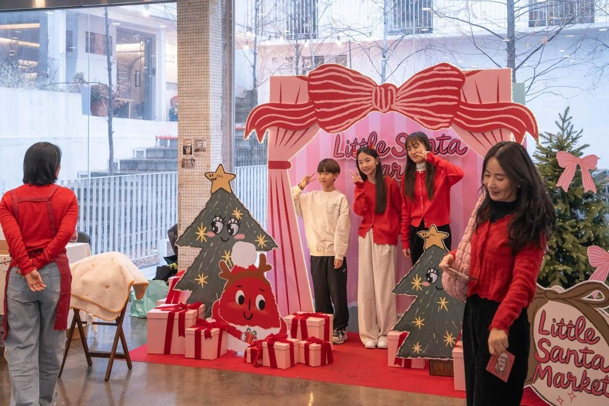
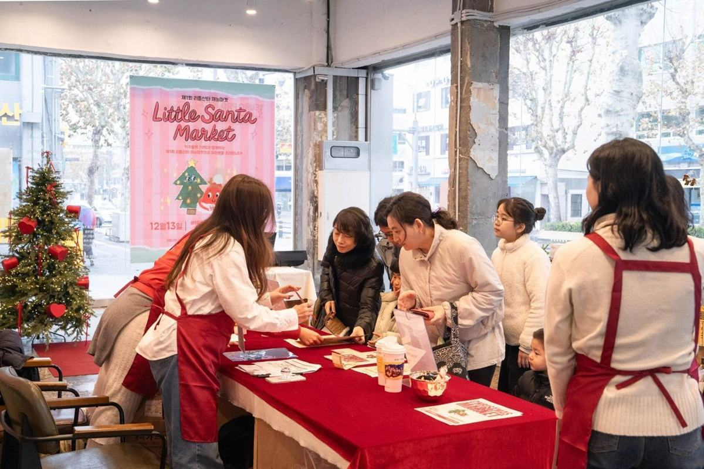
봉사자는 몇 명이 함께하나요?
리틀산타 40명(한 부 20명)과 함께 봉사자 13명이 섬깁니다. 산타 멘토 1명이 리틀산타 4명을 맡아(1:4) 아이들을 가까이서 돌보며 재능 존을 운영합니다. 모든 봉사자는 1부와 2부에 계속 함께합니다.
| 역할 | 인원 | 하는 일 |
|---|---|---|
| 총괄 | 1명 | 전체 진행, 현장 판단 (패브릭토리) |
| 산타 멘토 | 5명 | 재능 존마다 1명. 준비 기간 보호자 문의 안내, 당일 존 운영과 리틀산타 돌봄 |
| 웰컴·티켓 데스크 | 2명 | 손님 맞이, 티켓 안내·배부, 나눔 안내 |
| 동선·안전 안내 | 2명 | 마켓 공간 흐름 관리, 계단·출입구 안전, 미아 방지 |
| 리틀산타 대기실 | 1명 | 아이들 도착 확인, 짐 보관, 부별 교대 준비 |
| 포토존·다과 지원 | 1명 | 포토존 안내, 다과존 보조와 위생 관리 |
| 사진·영상 기록 | 1명 | 현장 기록 (초상 동의 범위 안에서) |
| 합계 | 13명 |
- 세팅·철수에는 모든 봉사자가 함께합니다. 손을 보태 주시는 분이 더 있으면 시간을 크게 줄일 수 있습니다.
- 봉사자는 성인 자원봉사자로 구성하며, 행사 전 온라인 사전 교육에 참여합니다.
2025년 제1회는 어땠나요?
2025년 12월 13일, 키즈셀러 70명과 운영 스태프 17명이 함께 첫 번째 리틀산타 재능마켓을 열었습니다. 올해 김포 리틀산타는 이 경험을 40명 규모로 담아 교회 공간에서 이어 갑니다.
| 항목 | 내용 |
|---|---|
| 일시 | 2025년 12월 13일(토), 1·2부 운영 |
| 장소 | 원유로프로젝트(1EURO PROJECT) 북가좌 A동 1·2층 |
| 참여 | 키즈셀러 70명 · 운영 스태프 17명 |
| 구성 | 응원 · 마사지 · 네일아트 · 크리스마스 · 디저트 · 다방 · 과일 · 스포츠 (8개 존) |
| 입장 | 1만원 티켓 1장 = 리틀산타 5명의 재능 선물 |
| 나눔 | 대관비를 제외한 전액을 소아암을 이겨내는 어린이를 위해 기부 |
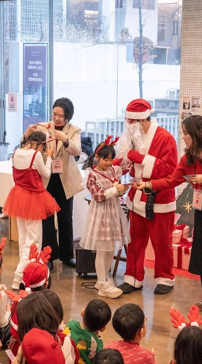
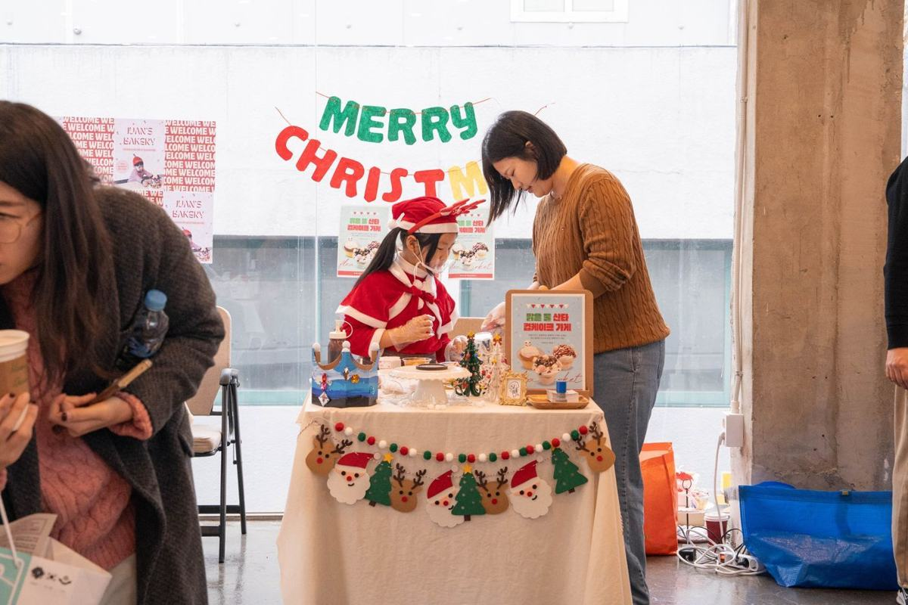
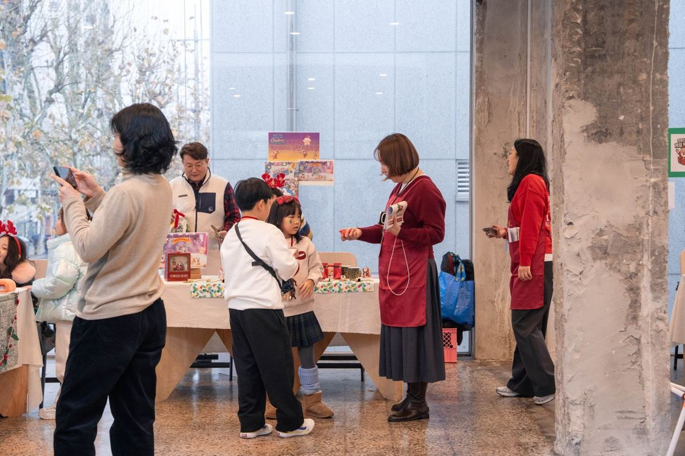
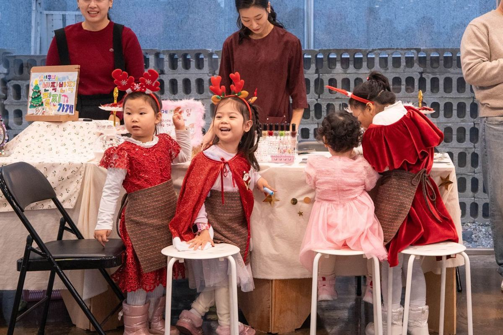
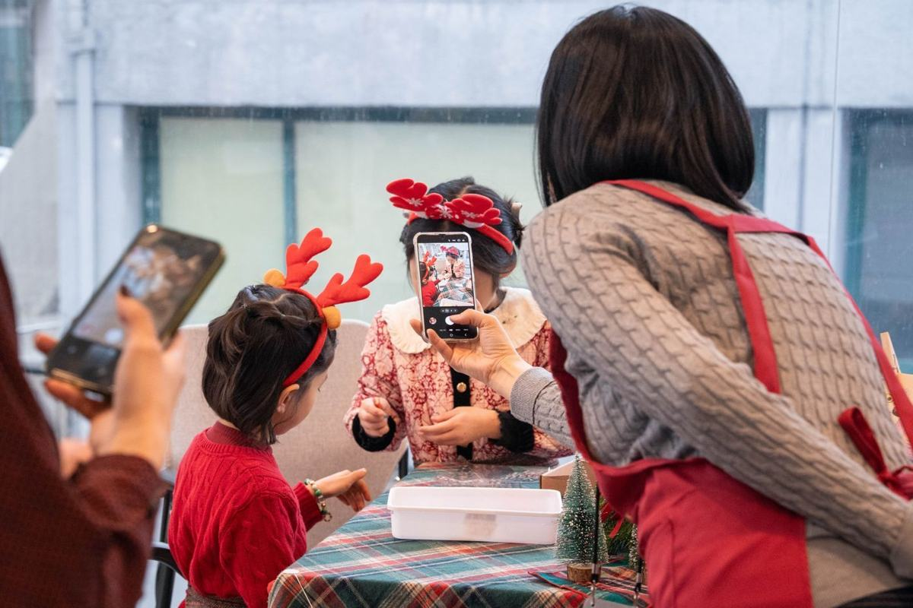
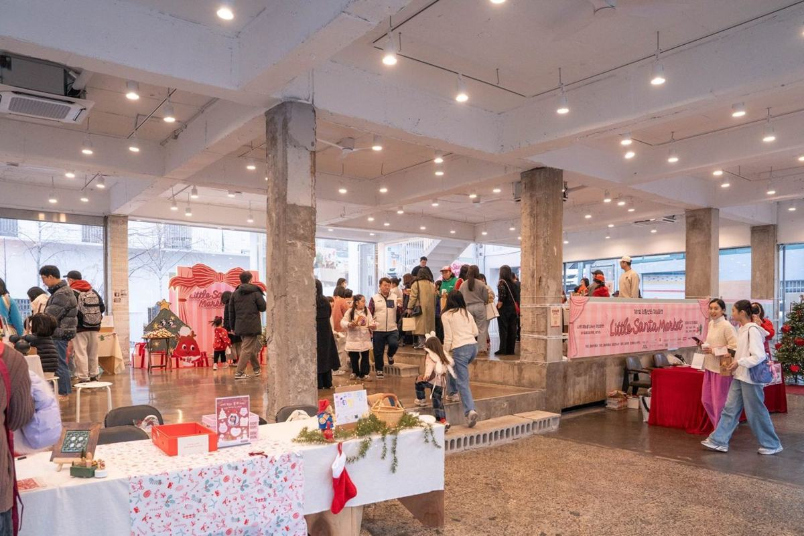
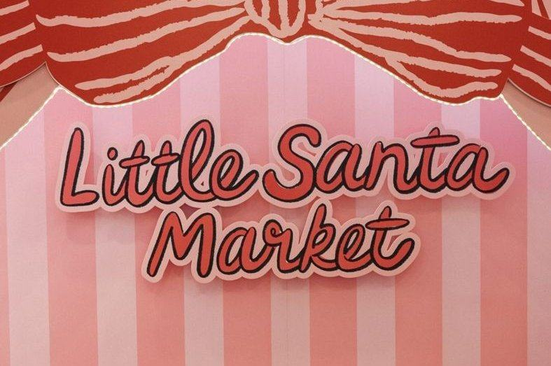
누가 함께 준비하나요?
움직이는 교회는 아이들과 이웃을 맞이하는 자리를, 패브릭토리는 프로그램의 기획·교육·운영을 맡아 함께 준비합니다.
| 항목 | 움직이는 교회 | 패브릭토리 |
|---|---|---|
| 공간 | 행사 공간·대기 공간, 전날 세팅 | 공간 배치, 부스·포토존 연출, 철수 후 원상 복구 |
| 리틀산타 모집 | 교회·지역 안내, 김포 지역 가정 연결 | 모집 안내문·신청 양식, 참가 확정 안내 |
| 준비 과정 | 워크숍 장소, 말씀 나눔 | 리틀산타 워크숍, 보호자 안내, 재료 안내 |
| 봉사자 | 봉사자 연결 | 봉사자 구성·사전 교육, 당일 총괄 |
| 당일 진행 | 여는 기도·성탄 말씀 | 마켓 운영, 안전 관리, 기록 |
| 나눔 | 기부처 함께 선정 | 티켓 수입 정리와 기부 결과 공유 |
나눔에는 두 가지 원칙이 있습니다.
- 실비를 제외한 전액 기부 — 티켓 수입에서 실비만 제외하고 모두 기부합니다. 기부는 어른의 이름이 아닌 참여 아이들의 이름으로 전합니다. 기부처는 함께 기도하며 정합니다.
- 이름 없는 섬김 — 모든 봉사자가 이름을 드러내지 않고 자원봉사로 함께합니다. “너는 구제할 때에 오른손이 하는 것을 왼손이 모르게 하여”(마태복음 6:3)는 말씀처럼, 빛나는 것은 아이들의 선물과 하나님의 사랑입니다.
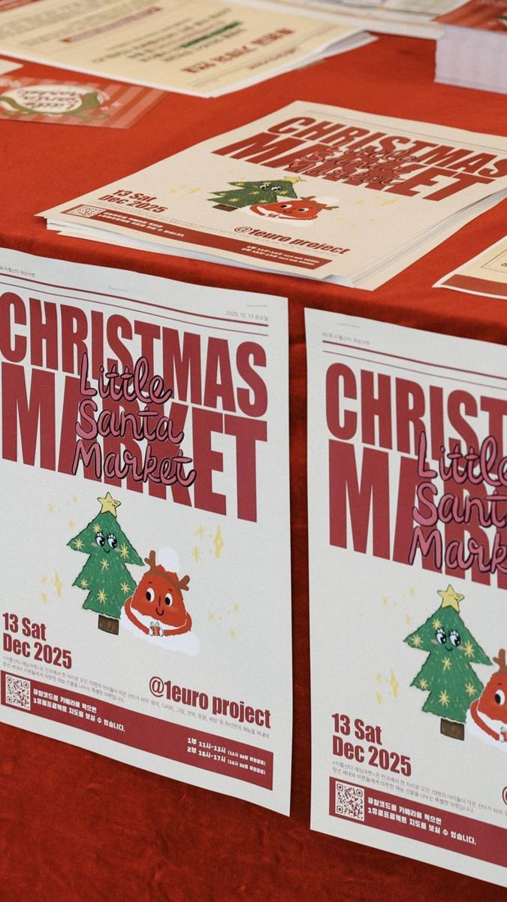
어디로 문의하면 되나요?
〈리틀산타 재능마켓〉은 ‘단단한 내면을 디자인하는’ 정서지능 교육·콘텐츠 브랜드 패브릭토리가 기획하고, 이번에는 김포 운양동 움직이는 교회에서 열립니다. 리틀산타 참여나 봉사에 관한 문의는 아래로 연락해 주세요.
| 기획·운영 | 패브릭토리(FABRICTORY) |
| 장소 | 김포 운양동 움직이는 교회 |
| 문의 | 임한나 (패브릭토리 대표) |
김포의 아이들이 하나님께 받은 재능으로 이웃을 섬기는 성탄, 리틀산타의 손님으로, 함께 섬기는 손으로 함께해 주세요.